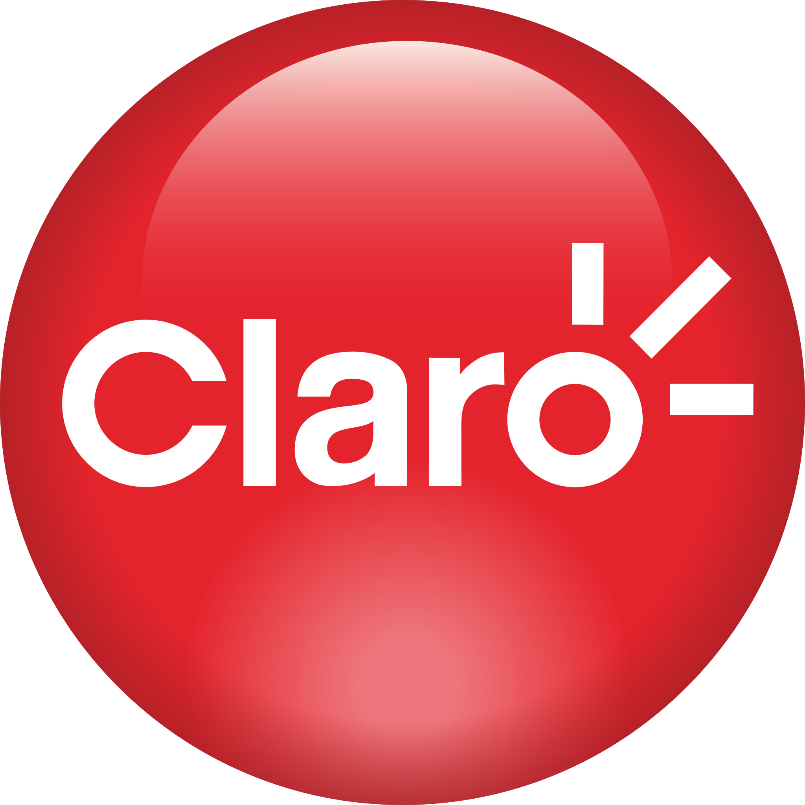
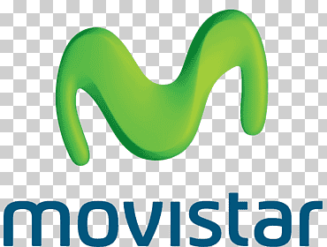
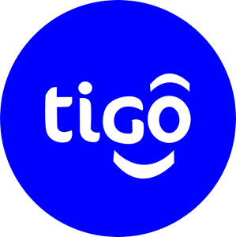
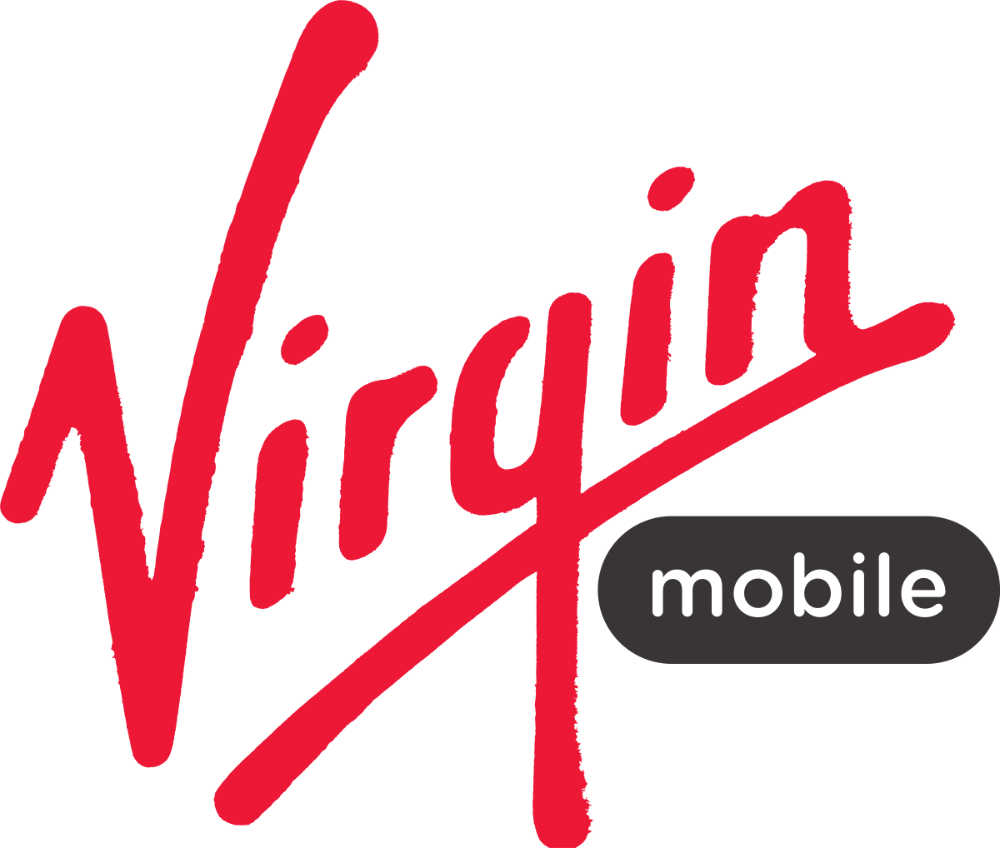

Claro
Claro, nacida como Comcel en 1994, es la empresa de telecomunicaciones con mayor participación de mercado en Colombia. Cuenta con una amplia cobertura 4G y 5G, ofreciendo planes prepago, pospago y fibra óptica, Claro Colombia inició sus operaciones en 1994 bajo la marca Comcel y, desde 2012, opera bajo la marca Claro después de su fusión con Telmex Colombia. Con el pasar del tiempo, no muchos tienen en la memoria esa marca que se fundó hace casi tres décadas
- 1994: Fundación de Comcel
- 2006: Cambio de nombre a Claro
- 2012: Lanzamiento de 4G en Colombia
- 2020: Implementación de 5G en algunas ciudades
Enlace a la página web: Claro Colombia
Movistar
Movistar, presente en Colombia desde 1994, es la segunda empresa de telefonía móvil más grande del país. Brinda cobertura 4G y 5G en gran parte del territorio nacional, Movistar ingresó a Colombia en 2004 como operador de telefonía móvil, tras la adquisición y compra de todas las filiales de BellSouth en Latinoamérica en ese mismo año. BellSouth en Colombia integró a las compañías Celumóvil, Celumóvil de la Costa y Cocelco. Con la fusión de Telefónica Colombia y Movistar Móviles en 2012, Movistar Colombia se convirtió en la empresa más grande del país en el sector de las telecomunicaciones
- 1994: Inicio de operaciones como Bellsouth
- 2000: Adquisición por parte de Telefónica y cambio de nombre a Movistar
- 2010: Lanzamiento de 4G en Colombia
- 2021: Expansión de cobertura 5G
Enlace a la página web: Movistar Colombia
Tigo
Tigo, tambien llamada anteriormente "ola" o conocida como UNE y Orbitel, es la tercera empresa de telefonía móvil en Colombia. Ofrece cobertura 4G y 5G en gran parte del país, Tigo, es una empresa de telecomunicaciones colombiana creada en 2006, propiedad de Grupo EPM y de Millicom International Cellular, S.A. con el 50 % cada uno.12 La empresa ofrece servicios de telecomunicaciones a nivel nacional e internacional por medio de Colombia Móvil S.A. bajo la marca Tigo y bajo la marca Orbitel en Canadá, Estados Unidos y España (con servicios de larga distancia y telefonía móvil con Orbitel Móvil)
- 1996: Fundación de UNE
- 2003: Adquisición de Orbitel
- 2014: Cambio de nombre a Tigo
- 2020: Lanzamiento de 5G en algunas ciudades
Enlace a la página web: Tigo Colombia
Movistar

WOM, el operador más nuevo en el mercado colombiano (2020), ofrece planes prepago y pospago con precios bajos y gran cantidad de datos. Utiliza la red de Claro para brindar cobertura 4G.
WOM es una empresa de telecomunicaciones colombiana. Surgió a partir de la llegada del fondo de inversión privado de origen británico Novator Partners LLP a Colombia en 2019 y tras la compra de Avantel S.A. en 2020. El 22 de abril de 2022 el argentino Ramiro Lafarga asume el liderazgo de la compañía como CEO.
- 2020: Inicio de operaciones en Colombia
- 2021: Expansión de cobertura a más ciudades
- 2022: Introducción de planes con beneficios adicionales
Enlace a la página web: WOM Colombia
virgin
Virgin Mobile UK fue el primer operador móvil virtual del mundo; inició operaciones en 1999. En un principio la empresa se lanzó como un joint venture entre One2One (posteriormente T-Mobile) y Virgin Group, en la cual la primera rentaría su red para ofrecer servicios al usuario final bajo la marca Virgin Mobile..
Virgin Mobile es un proveedor de telefonía móvil que forma parte del conglomerado Virgin Group. Tiene presencia actualmente en Colombia, Chile, México, España, Reino Unido, Irlanda, Canadá, Rusia, Arabia Saudita, Emiratos Árabes Unidos, Polonia y Sudáfrica. Virgin Mobile fue el primer operador móvil virtual (OMV) del mundo cuando se introdujo en el mercado británico en 1999.
Enlace a la página web: Virgin Mobile Colombia
Comparaciones telefonicas
| Compañía | Cobertura | Planes Disponibles | Servicios Adicionales | Precios |
|---|---|---|---|---|
| Claro | Buena | Varios planes prepagos y postpagos | Internet móvil, llamadas internacionales | Varía según el plan |
| Tigo | Extensa | Planes personalizados | Roaming internacional, SMS | Consultar en el sitio web |
| Movistar | Amplia | Plan único adaptable | Streaming de música, redes sociales | Desde $20/mes |
| WOM | Nacional | Planes económicos | Redes sociales ilimitadas, minutos internacionales | Desde $15/mes |
| Virgin | Cobertura limitada | Plan básico y flexibles | Descuentos en compras adicionales, SMS gratis | Desde $10/mes |